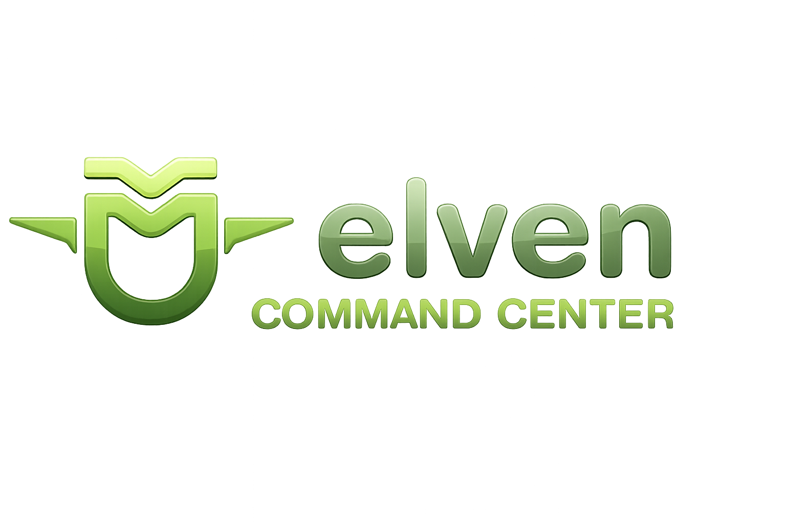

Command Center — Time NOC - Elven — Relatório Operacional
Command Center | Relatório Operacional — 24/06 a 25/06/2026
Consolidado de dois dias operacionais — 12 clientes Time NOC - Elven — 24 e 25/06/2026.

Consolidado de dois dias operacionais — 12 clientes Time NOC - Elven — 24 e 25/06/2026.
449 eventos em 12 clientes ao longo de dois dias. 340 alertas e 109 incidentes. SLA não atingido: apenas 13 eventos (3% do total). 211 runbooks executados. Kontik concentrou 31% do volume total com 137 eventos.
Dia 24: 332 eventos, SLA 2,1%, 164 runbooks, IA Agente ativa (Trillia 3/3). Dia 25: 117 eventos, SLA 5,1%, 47 runbooks, IA Agente ativa (Trillia 3/3). Excelente cobertura nos dois dias.
Elven Works (127 eventos, 103 runbooks, 9,4% SLA não) é o maior cliente em volume e automação. Trillia foi o único com IA Agente em ambos os dias — 6/6 fechamentos automáticos.
A maioria dos eventos foi atendida dentro do SLA. Os 13 sem ACK representam apenas 3% do volume. Renan atuou com 17 eventos de TTA > 15min apenas no dia 24/06. No dia 25/06 apenas Thallyson e sem ACK (6 casos) registraram SLA não atingido — operação exemplar no geral.
Sem ACK (13): alerta nunca reconhecido. Indica ausência de plantão ou falha de roteamento. Todos 13 casos distribuídos entre 24/06 (7) e 25/06 (6).
TTA > 15min (21): alerta reconhecido com atraso. Renan lidera com 17 no dia 24/06. Thallyson 2 casos no 25/06; Antonio e Leandro 1 cada no 24/06.
Dia 24/06: 3 eventos atendidos, 3 fechados (100%)
Dia 25/06: 3 eventos atendidos, 3 fechados (100%)
Total período: 6/6 fechamentos automáticos
Intervenção humana no período: zero